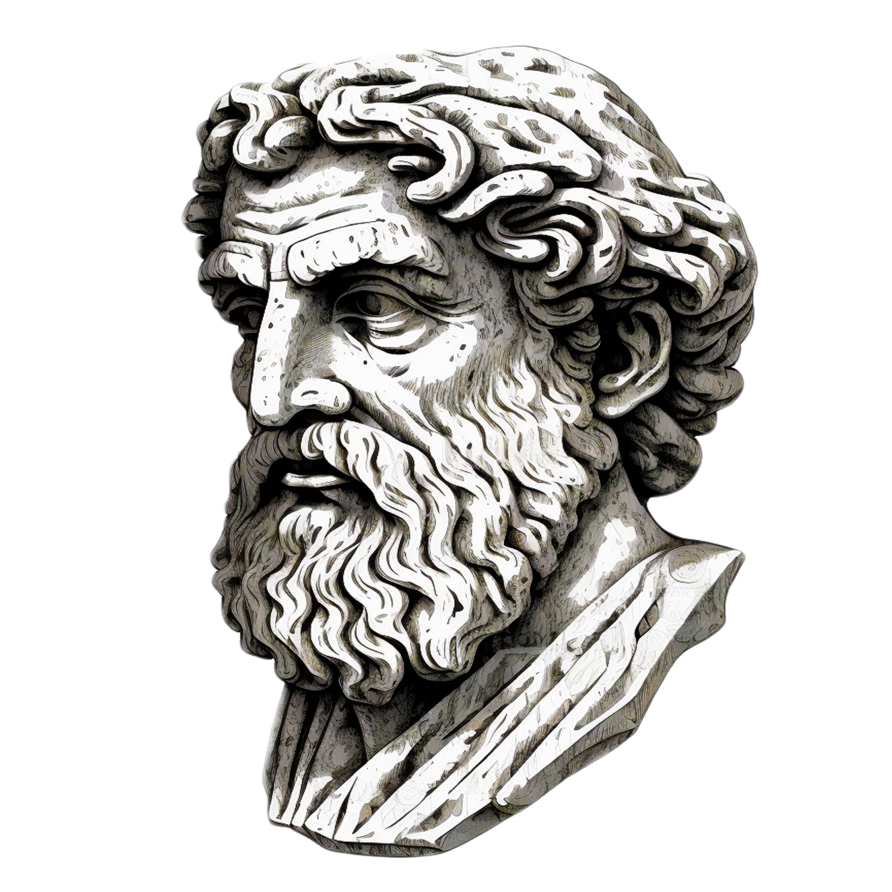
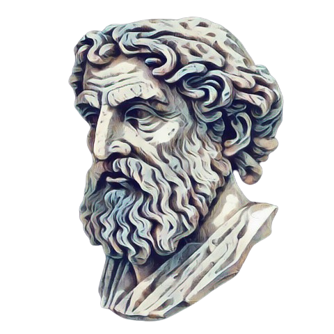

Щодня зростає залежність людей від різноманітного непотрібу, на який вони готові витрачати безліч часу. Інколи люди навіть готові жити заради цього. Кількість людей залежних від різних, не дуже необхідних для життя речей, зростає щодня. Тут виникає питання, чи можуть люди стати вільнішими та відмовитись від матеріального непотрібу.У даному дослідженні будуть розглянуті теми, що починалися зі заснування матеріалізму ще в давнину, в античних часах. Також будуть розглянуті думки сучасників разом з поглядами сучасного суспільства.

Започаткування ідей матеріалізму було засноване ще під час життя Платона та його учня Арістотеля. Це стало однією з основ філософської теми. Вони обидва вважали, що не все у світі має зв'язок з матеріальністю, наприклад, душа. Платон, наприклад, довів таким чином існування Бога в його розумінні. Арістотель думав майже так само, проте для нього світ існує в фізичних об'єктах, а не в ідеях. Звісно, ці думки також мали свої противаги, як, наприклад, у Демокріта. Він повністю заперечував існування будь-яких надприродних явищ, таких як магія або ті самі Боги. І це не дивно, оскільки він розвив учення про атоми та висунув свою теорію про існування світу, не його циклічність.
.png)
Сучасне розуміння матеріалізму почало формуватися після наукової революції, а його найбільшим виявом стали "Математичні принципи природної філософії", опубліковані Ньютоном. Це видання взяло на озброєння принцип механіки, який намагався пояснити усе за допомогою механічного руху та взаємодії матеріальних тіл.Такий підхід до матеріалізму дожив до наших часів, принаймні у розумінні багатьох сучасних людей, які сприймають все, що має механічний рух та взаємодіє з іншими матеріальними тілами, як матеріальне а все інше пов'язане з Божественними явищами.
Є низка філософських напрямків зі схожими ідеями. Хоча всі вони досить схожі один на одного як по суті, так і по ідеям, серед них виділяється один, який відрізняється від інших своєю унікальною думкою, ціллю, ідеєю та баченням світу. Фрідріх Ніцше, агресивний критик тогочасної моралі, культури та релігії, вирізняється своїми індивідуальними поглядами. Хоча він не був настільки популярний через свої ідіотські, на думку тогочасних людей, ідеї, проте у нього була доволі чітка суть.Ніцше хоче, щоб людина жила і дивилася на цей світ, але не жила ним. Раділа кожній миті, але не жила своїми емоціями. Любила своїх близьких, але без залежності. Досягти цього можна через відмову від надмірної залежності від почуттів та думок, а також від матеріальних речей. Тим самим Ніцше створює ідеологію, яка протирічить матеріалізму та ідеї не вільності душі.

Думка про те, що суспільство перетворюється на біомасу, яка витрачає своє життя лише для того, щоб щось купити, напевно була у кожної людини. Здається, ми занадто багато часу присвячуємо пошукам матеріальних благ, сподіваючись, що це поліпшить наше становище. Можливо, в усіх нас сформувалася "ілюзія потрібності". Це враження, ніби нам щось необхідно, і що саме цей предмет чи послуга зробить наше життя кращим.Багато людей можливо не відчувають дискомфорту від цього підходу. В такому випадку можна висновувати, що для багатьох людей це стало своєрідною сутністю існування. Ця "ілюзія потрібності" визначає їхнє бачення мети у власному житті. Однак важливо також питати себе, чи є це єдиним джерелом задоволення та смислу в житті.
По-перше, чудове життя без бездумної витрати грошей, на ще більший непотріб, ніж самі гроші, трошки б зламало економіку всього світу, а в результаті вийшов б різкий удар по бізнесах. Проте це питання економічне, а нам потрібне суспільне. Звісно, якщо люди будуть більш вільними від непотрібу, нав'язаного компаніями, які просто хочуть продати свій товар, то і їхнє життя було б краще. Більше часу, більше різних думок, більше варіантів для проведення свого дня. Хіба це не чудово? Тому розуміння цієї теми у суспільстві є важливим.
.png)
Ця тема було доволі цікава для розібрання так як заставила задуматися про сенс існування людини її цілей у житті та її сутність. Для суспільства вона є доволі важлива так як вона б допомогла йому. Життя людей стало б набаго кращим та вільнішим.